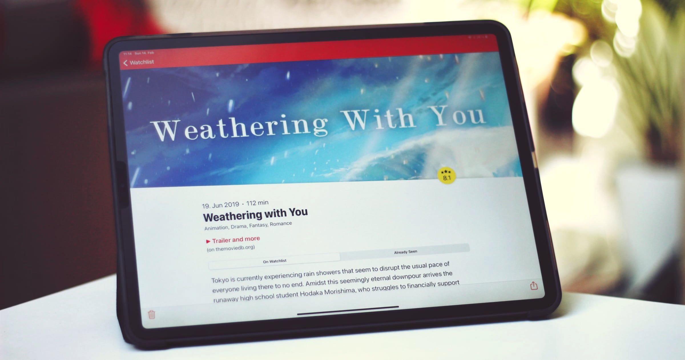

Feb 14, 2021 ⋅ 9 min read
How I Added Basic iPad Support to my iPhone Only App
I have a confession to make. It's really sad, but true. In my career as an iOS developer, I've only ever build iPhone apps. iPads were never meant to be supported. Well... all apps "worked" in theory! Sort of.

So, during my vacation in December, it was finally time to start working on the two-plus years old ticket to add iPad and iPhone landscape support for Cineaste App.
I gave myself a Christmas present and finished the feature on Christmas Eve (see the final PR on GitHub). The current version is available for testing on Testflight.
Feel free to test the app and send feedback! I would really appreciate it. 🙌
So, what did I do to add basic iPad and landscape support?
1) Activate that Checkmark!
The first important step is to activate that checkmark for iPad support. You can find that setting in Xcode under the settings of your main target under the tab "General" and the section "Deployment Info".
Cineaste App was also pinned to portrait orientation before. If you want to support landscape mode as well, activate the checkmarks for the new orientations too. You can find them directly below the checkmarks for the supported device categories.
2) Run and See What's Broken
If you're brave enough, pick an iPad as simulator, run your app, and see what's broken. In my case, there were some layout issues, but all in all, it didn't even look that bad. I was surprised! My goal was to create minimal iPad (and iPhone landscape) support that satisfied me for now. Bigger improvements can be made later.

Let's fix the layout problems! But one thing at a time.
3) Layout Issues and Optimization
Large Poster Images on iPad
On the iPad, the poster images (and therefore the cells) are a little bit too large. The images use a "Proportional Width" constraint which is set to ~20% of the screen width. This means on larger devices, the images are larger, too. To make the images a bit smaller on large devices, I programmatically updated the percentage of the constraint depending on the screen size.
For tips on how to use size classes for different layout on different devices, I can recommend the talk "Size Doesn't Matter: Building an App for Every iOS Device" by Janina Kutyn from AppBuilders 2019. 🍿
Safe Area Issues on Landscape Mode
Some safe area settings (for the toolbar or the poster) need improvements in the movie detail screen when using the iPhone in landscape mode. To fix the issues with the safe area on landscape mode, I constrained the toolbar to not respect the safe area and to use the superview instead. The reason for this is, that toolbars automatically respect safe areas. The UIBarButtonItems are positioned respecting the safe area, so they have enough space to both sides. It doesn't matter when some small parts of the poster are not visible, so I set constraints to the superview on both sides.
Fix Table View Background Color
It looks weird to have a white area next to the poster. So, the table view background color in the lists on iPhone landscape should have no color and show the background color.
There is still an unresolved bug (on iOS 14 only), where a table view cell shows a white background when using a long tap to see the contextual menu. Anyone has an idea how to fix this?
Movie Detail and Poster Height
Most of the work has to be done in the movie detail screen in landscape mode. You shouldn't see a full screen image when navigating to the screen and then have to scroll a few times to see the information about a movie.
The screen is the most complex of the app. It contains two scroll views which are used to add a parralax effect on the poster when scrolling down.
To prevent seeing a full screen image initially, I added a "Proportional Height" constraint to the poster of 60%. This means when the device is in portrait mode, 60% of the screen displays the poster and you can already see 40% of movie information underneath. When rotating the device, it's the same logic. A user then sees way less of the poster than in portrait mode, but there's always the possibility to tap on the poster to see it full screen anyways.
It sounds simple to add one constraint but I introduced some new bugs with every release and needed some TestFlight versions until I got everything working correctly on iPad portrait and iPhone landscape. 🙈

The biggest part of work is done 💪 Yay!
4) Prevent Crashes
It can happen that your app crashes on the iPad, but it doesn't on the iPhone. Some UI elements, like UIAlertController or UIActivityViewController are displayed in a popover style on the iPad. Therefore they either need a UIBarButtonItem or a sourceView and sourceRect as anchor point to display the popover.
To check if your app crashes on the iPad, tap every button you have in the app. Additionally, look through your code and search for UIAlertController with style actionSheet or UIActivityViewController and set the information on the property popoverPresentationController to prevent crashes.
let actionSheet = UIAlertController(title: "Contact", message: nil, preferredStyle: .actionSheet)
let action = UIAlertAction(title: "GitHub", style: default) { _ in
/* link to GitHub */
}
actionSheet.addAction(action)
// 1) use the `UIBarButtonItem` to display the popover
actionSheet.popoverPresentationController?.barButtonItem = barButtonItem
// 2) use the center of a view to display the popover, for example on a `UITableViewCell`
actionSheet.popoverPresentationController?.sourceView = cell
actionSheet.popoverPresentationController?.sourceRect = CGRect(
x: cell.bounds.midX,
y: cell.bounds.midY,
width: 0,
height: 0
)
5) Add More App Icons
After running the app on the simulator you might have noticed that your app has no app icon anymore. We need to add the icon in some more sizes. To do that, choose the "AppIcon" in your Asset Catalog and on the Attributes Inspector, activate another checkmark "iPad". With a tool of your choice (I really like "Icon Generator" which is open source), generate the missing assets in the correct sizes and assign them in the Asset Catalog.
Awesome, that's it! At this point we are nearly good to go!
6) Additional Tasks
To release your app update on the AppStore, you should record some new iPad screenshots. To record screenshots for the AppStore, fastlane screenshots could be the tool of your choice.
When you have an external mouse or touchpad, you can test the cursor behaviour and right click menu of your app. I didn't optimize something for that, because it looked already good in my opinion. Maybe this is because I only use default iOS elements and don't want to have any special behaviour. With a right click, the app displays the contextual actions automatically, which is really cool.
7) That Last Big Improvement
In January, I read about layoutMarginsFollowReadableWidth for improved reading experience (see the thread with lots of awesome tips by @JordanMorgan10). I loved the idea and the movie detail screen (on large devices) was the perfect scenario to use this feature.
If you're working with storyboards, you can activate "Follow Readable Width" Layout Guide, instead of "Safe Area Relative Margins". In my case, I changed the layout guide of the stack view which contained the textual content. The stack view automatically adds insets to respect the readable width.
I think this is a major improvement.

For more information about that, read "Readable Content Guides" at Use Your Loaf. Even though it's a post from 2016, it's still relevant. 📚
I think with all these changes, the iPad version looks ~1000% better than before. But there are still some things which I may want to change in the future.
What's missing?
I loved the article "Designed for iPad" by @viditb which helped me a lot to identify what I'm still missing. 📚
The currently missing features are:
- Keyboard Support
- Multi Window Support (but I'm not sure if this is really relevant for this app)
- Drag and Drop Support (but I'm not sure if this is really relevant for this app)
- Improved Layout for iPad (the movie lists still don't use the optimal layout, a better idea would be to use a split layout with
UISplitViewController, a Grid Layout with aUICollectionView, or at least make use of a side bar to use the space on larger devices more efficient)
Conclusion
Adding support for iPad adds a lot of complexity to your app. You have to test so much more! There are many more different devices now, there is the split screen layout, you have to test rotating the devices, and and and...
But I really enjoyed it and it's worth it!
I had such respect for this task, but in retrospect it was not that difficult in my case. (This impression may vary, of course, depending on what your app does.) Just try it and improve it step by step. It doesn't have to be perfect right away.
This was my first experiment with iPad support. Please get in touch on Twitter and tell me what I might have missed or what I can improve.